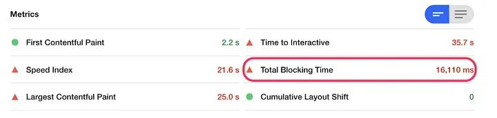
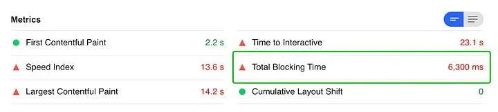
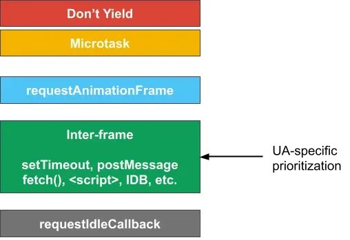
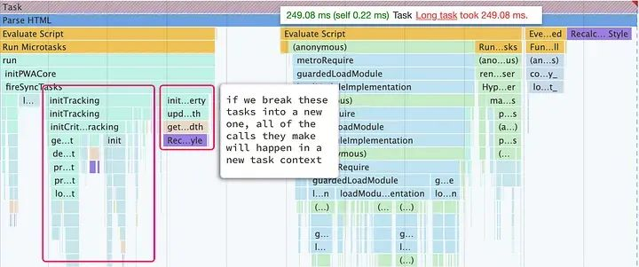
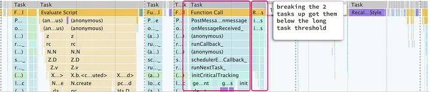
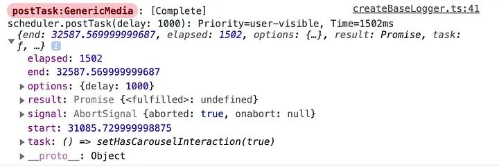

构建更快的 Web 体验 - 使用 postTask 调度器
2024-07-13 20:36:22 · YinHao
你有没有经历过打开一个网页，在页面上点击多次才有反应？或者在轮播图上滑动图片时卡顿和不自然？虽然这种经历经常发生，但是我们可以利用工具来提高用户的体验和响应速度。高效地调度和优先处理任务可能会产生快速响应的体验和感觉迟缓之间的巨大差异。
Airbnb 一直在与 Chrome 团队合作，利用优先级 postTask 调度器来实现新的模式，并提高现有模式的性能，以提高性能。在许多性能方面的努力集中在页面的初始加载上，Airbnb 的目标是提高页面加载后的用户体验。他们在许多方面使用 postTask 调度器，包括预加载轮播图中的图像和使地图更具响应性。
初识 postTask 调度器
postTask 调度器旨在为我们提供更灵活和强大的方式，以高效地调度任务。类似于 requestIdleCallback 和 setTimeout，有效地使用 postTask 调度器可以帮助减少总阻塞时间、FCP、输入延迟和其他关键指标。
在许多情况下，页面的性能不仅仅取决于初始加载的速度，而是取决于页面的响应速度和交互性能。通过使用 postTask 调度器，我们可以更好地管理任务和处理优先级，从而优化网页的性能。例如，在处理轮播图时，我们可以使用 postTask 调度器将图像预加载任务放入低优先级队列中，以确保关键任务得到优先处理。类似地，在处理地图时，我们可以使用 postTask 调度器来确保关键任务得到优先处理，从而提高地图的响应速度和交互性能。
Airbnb 为了评估他们的进展，创建了新的实时用户监测性能指标，并利用 WebPageTest 和 Lighthouse 等工具提供的现有实验室基准测试指标。
优化前（加载搜索结果页，总的阻塞时间大约为 16s 左右）
优化后 （总的阻塞时间缩短了 10s 左右）
postTask 调度器是什么
与 requestAnimationFrame、setTimeout 或 requestIdleCallback 类似，scheduler.postTask 允许我们在浏览器的事件循环中安排一个函数。然后浏览器会对该函数进行优先级排序并运行它。
最新版本的 chrome 浏览器已经支持了 scheduler api，对于那些不支持的浏览器也可以使用 https://www.npmjs.com/package/scheduler-polyfill 这个补丁
scheduler.postTask(() => console.log("Hello, postTask"));
// We’re also able to pass a set of options such as priority or
// delay to influence when it will be scheduled to run.
scheduler.postTask(() => console.log("Hello, postTask"), {
delay: 1000,
priority: "background",
});
在上面的例子中，我们向 postTask 传递了一个延迟时间和优先级参数，告诉它我们想要在等待 1 秒后在后台运行我们的任务。postTask 调度程序目前支持 3 种不同的优先级。
| 优先级 | 描述 | 补丁兼容版本 |
|---|---|---|
| user-blocking | 最高优先级是用于阻止用户与页面交互的任务，例如渲染核心体验或响应用户输入。 | 在支持的情况下，它使用 MessageChannel 尽可能快地调度任务。如果不支持，则退回到 setTimeout |
| user-visible | 第二高优先级是用于用户可见但不一定阻止用户操作的任务，例如呈现页面的次要部分。这是默认优先级。 | 在支持的情况下，它也使用 MessageChannel 并退回到 setTimeout，但将排在任何具有用户阻止优先级的调用之后。 |
| background | 最低优先级是用于不是时间紧迫的任务，例如后台日志处理或初始化某些第三方库 | 通常使用 requestIdleCallback，并在不支持 requestIdleCallback 的情况下退回到 setTimeout (0)。 |
postTask 调度程序的一个好处是它建立在 Abort Signals 之上，使我们能够取消已排队但尚未执行的任务。该 API 还定义了一个新的 TaskController，它允许通过信号使用优先级来控制任务和优先级。
const controller = new TaskController("background");
window.addEventListener("beforeunload", () => controller.abort());
scheduler.postTask(() => console.log("Hello, postTask"), {
signal: controller.signal,
});
拆解长任务
我们应该拆分长任务以提高应用程序的响应能力。下面是一个错误和行为记录上报的长任务示例。请注意浏览器如何将任务标记为长任务。
长任务（Long tasks）是指执行时间超过 50 毫秒（或者某些浏览器中可能是 100 毫秒）的任务
一旦我们确定了一个长任务，我们就可以使用 postTask 将任务分解成更小的任务。
// By using postTask, each method will execute in its own individual task context,
// breaking the one large task into multiple smaller tasks that allow the browser
// to respond to input and do rendering in between them if necessary.
await scheduler.postTask(() => initViewportWidthProperty());
await scheduler.postTask(() => initCriticalTracking());
使用 scheduler.postTask 后，我们不再有任何长时间任务，只有小于 “长任务阈值” 的较小任务。
用例：资源预加载
预加载轮播图中的下一个图像或者在用户加载页面之前加载详细信息可以显着提高站点的性能和用户的感知性能。我们最近使用 postTask 调度程序实现了一个延迟、分阶段和可取消的图像预加载程序，用于我们的主搜索图像轮播。让我们看看如何使用 postTask 构建一个简单版本。
图片轮播预加载的触发时机：
列表在屏幕上显示大约 50% 时
延迟一秒；如果用户仍在查看它，则在轮播中加载下一张图片
如果用户滑动图像，则预加载下三张图像，每张图片之间间隔 100ms
如果轮播在一秒计时器结束之前的任何时候离开视口，我们应该取消所有尚未完成的预加载任务。如果用户导航到另一个页面，也取消所有预加载任务

当下一张幻灯片滚动到视图中时，将加载第二张图片。一旦我们滑动，接下来的 3 次加载，每次都在前一次加载后 100 毫秒开始
让我们首先看一下这个问题的第一部分，即用户将卡片滚动到视图中一半以上且维持一秒钟以上，则预加载轮播中的下一张图像。虽然在接下来的几个示例中我们使用 React，但这并非必需的。这里所有的概念也可以使用其他框架，甚至你也可以不用任何框架。
我们假设有一个名为 preloadImages 的方法，它开始获取下一张图片并在完成预加载图片时切换一个布尔值。
const [hasPreloadedNextImage, setHasPreloadedNextImage] = useState(false);
const preloadImages = useCallback((imageUrls) => {
imageUrls.forEach((url) => preloadImage(url));
setHasPreloadedNextImage(true);
}, []);
我们可以将 Intersection Observer 和 postTask 调度程序相结合，实现在视图中 50% 一秒后加载第二张图像。
const controller = (useRef < TaskController) | (null > null);
const [carouselDomRef, carouselIsInView] = useInView({
skip: hasPreloadedNextImage,
threshold: 0.5,
});
useEffect(() => {
if (carouselIsInView) {
controller.current = new TaskController("background");
scheduler.postTask(() => preloadImages([cardPhotoUrls[1]]), {
delay: 1000,
signal: controllerRef.current?.signal,
});
} else {
controller.current?.abort();
controller.current = null;
}
}, [carouselIsInView, preloadImages]);
这里我们使用了 useInView 用于检测元素是否在视图中。我们设置了一个阈值为 0.5 ，这意味着元素的一半必须在视图中才会被视为 “可见”。我们还设置了 skip 属性，以便在我们预加载下一张图片时跳过这个元素。
当元素进入视图时，我们创建了一个新的 TaskController ，用于控制预加载任务的优先级。然后，我们使用 postTask 调度程序调用 preloadImages，预加载下一张图片。我们设置了一个延迟参数为 1000ms，这意味着用户必须在视图中至少停留 1 秒钟，然后才会开始预加载下一张图片。我们还将 TaskController 的信号传递给 postTask，以便在用户滚动出视图时可以取消预加载任务。
当元素不再在视图中时，我们使用 TaskController 的 abort 方法取消任何挂起的预加载任务。
将网络资源分阶段载入
我们需要实现的最后一个要求是，在用户滑动轮播图后，每个图像请求之间间隔 100 毫秒。让我们看看如何使用 postTask 调度程序修改现有代码以应对这种情况。首先，让我们添加一个 hook，在用户与之交互时调用我们的预加载逻辑，以预加载三个图像。我们将跳过第一张图像，因为我们已经加载了它。
useEffect(() => {
if (hasInteractedWithCarousel) {
preloadImages(imageUrls.slice(1, 4));
}
}, [hasInteractedWithCarousel]);
// We use the list index combined with delay to
// stagger the call to preload each image by 100ms each.
const preloadImages = useCallback((imageUrls) => {
imageUrls.forEach((url, index) => {
scheduler.postTask(() => preloadImage(url), {
delay: index * 100,
signal: controller.current.signal,
});
});
setHasPreloadedNextImages(true);
}, []);
postTask 调度程序的一个目标是提供一个低级别的 API，以便在其之上构建。我们已经构建了一个集成，使我们在 React 中使用时可以执行许多不同的模式或策略，我们认为这非常有用。
在 React 中使用 postTask
尽管与 React、Vue、Angular、Lit 等进行自定义集成并不是必需的，但这样做可以获得一些重大的好处。例如，在 React 中，当一个组件卸载时，我们通常希望取消任何仍在排队的任务。
我们可以在 useEffect 的返回的函数中做到这一点。然而，每次都靠人去这样做是一项不小的挑战，而不这样做可能会导致内存泄漏。还有一个挑战是记得在调用 abort () 时捕获调度程序抛出的任何 AbortError，因为这些错误是非常可预期的，但我们不能为其做出全面的异常处理。
以下是一个 usePostTaskScheduler 钩子的一些希望具备的功能，这将使它更容易使用：
传递一个 enabled 标志，允许绕过调度程序以便于 A/B 测试；
允许轻松取消任务，包括在卸载时自动取消；
自动将信号传播到 scheduler.postTask 和 scheduler.wait；
捕获和抑制 AbortErrors 或类似的错误；
支持强大的调试功能；
允许为通用模式指定策略，例如我们在本文中介绍的两个模式；
添加一个等待延迟完成的钩子。
虽然本文不会深入讨论如何实现这个钩子，但是我们可以看到，它简化了在 React 中使用 postTask 调度程序的过程。例如，我们可以使用 postTask 调度程序来延迟加载一个成本高、重要性低的 React 组件，直到 load 事件触发后，并清理一些旧的 localStorage 状态。
const hasLoadingCompleted = useWaitForDelay({ event: "load" }, () => {
cleanupLocalStorageKeys();
});
return (
<>
{hasLoadingCompleted && <ExpensiveComponent />}
<ExistingComponents />
</>
);
在上面的例子中，如果在事件发生之前卸载了该组件，我们将取消清理 localStorageKeys 的任务，并且不会渲染 <ExpensiveComponent />。在我们的情况下，ExpensiveComponent 是异步加载的，因此通过延迟它，我们显著降低了初始水合成本，包括阻塞时间和 bundle 大小的成本。
让我们看看如何在后台 load 事件触发后延迟 5s 加载我们的 service worker
在这里，我们可以看到如何使用 postTask 调度程序来延迟加载我们的 service worker。它将在 load 事件触发 5 秒后加载，从而减少初始加载的成本。
const { scheduler } = usePostTaskScheduler({ priority: "background" });
useEffect(() => {
scheduler.postTask(() => initializeServiceWorkers(path), {
delay: 5000,
event: "load",
});
}, []);
未来展望
Chromium 是第一个实现和原型化这个新 API 的浏览器，但是该 API 正在 WICG 中公开开发，旨在被所有浏览器标准化和采用。值得注意的是，即使没有本地支持，我们也可以通过使用 polyfill 在 Safari 和 Chrome 等浏览器中看到许多性能改进，因为它可以通过调度灵活的控制事件的优先级。